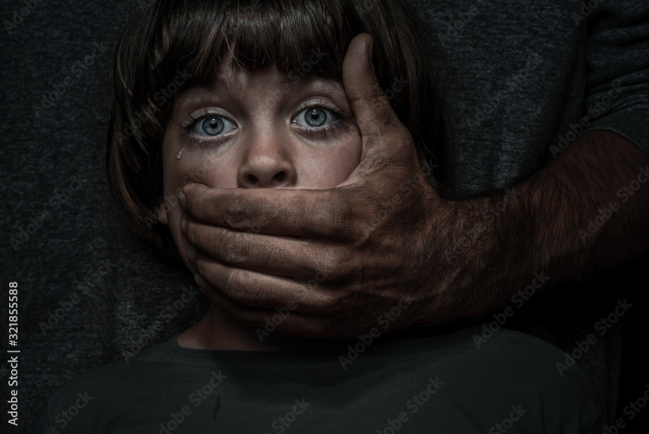
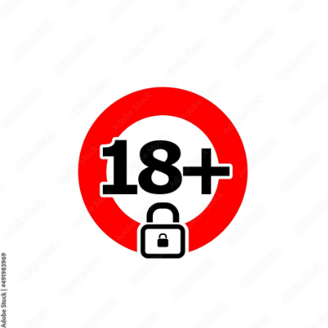

Artigo 2
Artigo 5
Artigo 15
Artigo 16
Artigo 17
Artigo 18
Artigo 22
Artigo 25
Artigo 81
Artigo 103
Considera-se criança, para os efeitos desta Lei, a pessoa até doze anos de idade incompletos, e adolescente aquela entre doze e dezoito anos de idade.
Parágrafo único. Nos casos expressos em lei, aplica-se excepcionalmente este Estatuto às pessoas entre dezoito e vinte e um anos de idade.
Nenhuma criança ou adolescente será objeto de qualquer forma de negligência, discriminação, exploração, violência, crueldade e opressão, punido na forma da lei qualquer atentado, por ação ou omissão, aos seus direitos fundamentais.
A criança e o adolescente têm direito à liberdade, ao respeito e à dignidade como pessoas humanas em processo de desenvolvimento e como sujeitos de diretos civis, humanos e sociais garantidos na Constituição e nas leis.
O direito à liberdade compreende os seguintes aspectos:
I - ir, vir e estar nos logradouros públicos e espaços comunitários, ressalvadas as restrições legais;
II - opinião e expressão;
III - crença e culto religioso;
IV - brincar, praticar esportes e divertir-se;
V - participar da vida familiar e comunitária, sem discriminação;
VI - participar da vida política, na forma da lei;
VII - buscar refúgio, auxílio e orientação.
O direito ao respeito consiste na inviolabilidade da integridade física, psíquica e moral da criança e do adolescente, abrangendo a preservação da imagem, da identidade, da autonomia, dos valores, idéias e crenças, dos espaços e objetos pessoais.
É dever de todos velar pela dignidade da criança e do adolescente, pondo-os a salvo de qualquer tratamento desumano, violento, aterrorizante, vexatório ou constrangedor.
Aos pais incumbe o dever de sustento, guarda e educação dos filhos menores, cabendo-lhes ainda, no interesse destes, a obrigação de cumprir e fazer cumprir as determinações judiciais.
Parágrafo único. A mãe e o pai, ou os responsáveis, têm direitos iguais e deveres e responsabilidades compartilhados no cuidado e na educação da criança, devendo ser resguardado o direito de transmissão familiar de suas crenças e culturas, assegurados os direitos da criança estabelecidos nesta Lei.(Incluído pela Lei nº13.257, de 2016)
Entende-se por família natural a comunidade formada pelos pais ou qualquer deles e seus descendentes.
Parágrafo único. Entende-se por família extensa ou ampliada aquela que se estende para além da unidade pais e filhos ou da unidade do casal, formada por parentes próximos com os quais a criança ou adolescente convive e mantém vínculos de afinidade e afetividade. (Incluído pela Lei nº 12.010, de 2009) Vigência
proibida a venda à criança ou ao adolescente de:
I - armas, munições e explosivos;
II - bebidas alcoólicas;
III - produtos cujos componentes possam causar dependência física ou psíquica ainda que por utilização indevida;
IV - fogos de estampido e de artifício, exceto aqueles que pelo seu reduzido potencial sejam incapazes de provocar qualquer dano físico em caso de utilização indevida;
V - revistas e publicações a que alude o art. 78;
VI - bilhetes lotéricos e equivalentes.
Considera-se ato infracional a conduta descrita como crime ou contravenção penal.